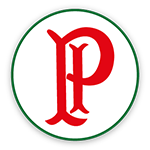
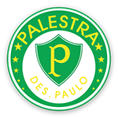

-

- 
-

- 
"O Palmeiras é um time paulista criado por membros da comunidade italiana no começo do século XX, no bairro do Brás, na cidade de São Paulo. Possui conquistas estaduais, nacionais e internacionais, como as Libertadores de 1999, 2020 e 2021. Entre os ídolos do Palmeiras, podemos citar os pentacampeões Cafu e Marcos.
O Palmeiras é um dos poucos times com dois mascotes, que são o periquito e o porco. O estádio do Palmeiras é o Allianz Parque, situado na zona central da cidade de São Paulo."
A história do Palmeiras começou no bairro paulista do Brás, em 1914. Na época, a região era habitada por comunidades italianas, que se organizaram para construir uma associação esportiva que os representasse.
O time Palestra Itália, primeiro nome do Palmeiras, nasceu no dia 26 de agosto de 1914, após uma reunião entre italianos, brasileiros, dois portugueses e um espanhol, a qual decidiu por estabelecer a associação esportiva. Palestra é um termo que, traduzido do italiano, pode significar ginásio, academia. De maneira geral, remete à prática de esportes.
"O primeiro jogo da equipe ocorreu no dia 24 de janeiro de 1915 contra a equipe Savoia, na cidade de Votorantim. Essa partida ficou 2 x 0 para o Palmeiras, e os dois gols foram de pênalti.
A primeira vez que o Palmeiras, Palestra Itália até então, enfrentou o Corinthians foi em 1918 e conquistou a vitória por 3 x 0. Seis anos após a fundação, em 1920, veio o primeiro título, quando a equipe conquistou o Campeonato Paulista.
Também em 1920 o time, com o apoio da Companhia Matarazzo, comprou o seu campo de futebol e boa parte do Parque Antártica. Nos anos seguintes, a equipe venceu competições nacionais e estaduais, além dos muitos confrontos contra os rivais São Paulo e Corinthians.
Em 1942, com o Brasil participando da Segunda Guerra Mundial, o governo de Getúlio Vargas proibiu que instituições utilizassem nomes que fizessem referência aos países do Eixo (Alemanha, Japão e Itália). Então, o nome foi alterado para Palestra São Paulo, mas a alteração não foi suficiente.
Sob ameaça de ser expulso de campeonatos e sofrendo com perseguições, decidiu assumir o nome de Palmeiras, mantendo o verde do uniforme e a letra “P” no símbolo. Para amenizar os ataques que recebiam devido à descendência italiana do time, no primeiro jogo com o nome de Palmeiras, que aconteceu contra o São Paulo, os jogadores entraram em campo com uma bandeira do Brasil e acompanhados de um oficial do exército."
Os principais títulos do Palmeiras são: • Copa Rio: 1951. • Copa Libertadores: 1999, 2020, 2021. • Copa Mercosul: 1998. • Recopa Sul-Americana: 2022. • Campeonato Brasileiro: 1960, 1967, 1967 (Taça Brasil), 1969, 1972, 1973, 1993, 1994, 2016, 2018, 2022. • Copa do Brasil: 1998, 2012, 2015, 2020. • Supercopa do Brasil: 2023. • Copa dos Campeões: 2000. • Torneio Rio-São Paulo: 1933, 1951, 1965, 1993, 2000. • Campeonato Paulista: 1920, 1926, 1926 (Extra), 1927, 1932, 1933, 1934, 1936, 1938 (Extra), 1940, 1942, 1944, 1947, 1950, 1959, 1963, 1966, 1972, 1974, 1976, 1993, 1994, 1996, 2008, 2020, 2022, 2023."


Rua 10 de dezembro, nº 001, Vila Japão - São Paulo - SP